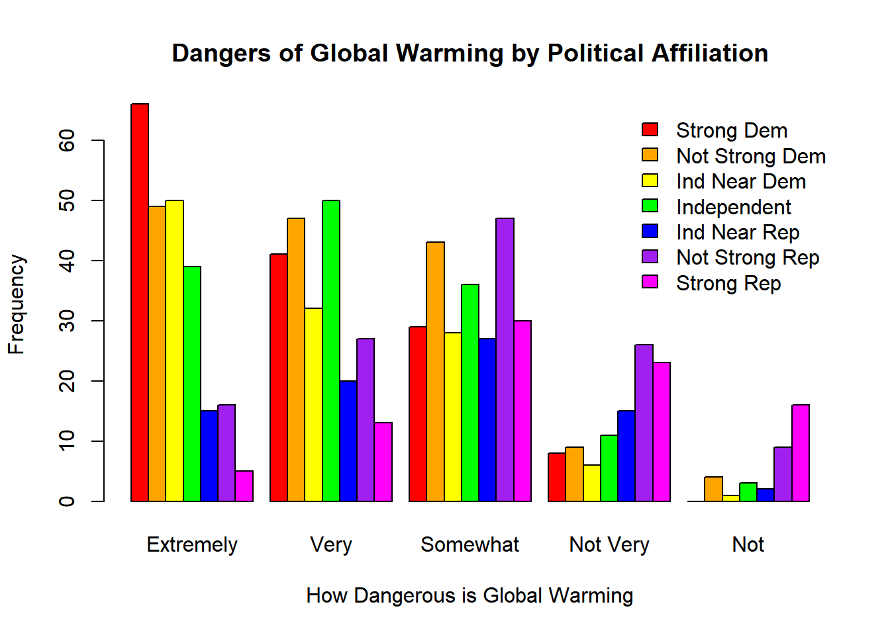

Below is a contingency table showing party identification in the rows and view of the danger of global warming in the columns.
table (gss$partyid, gss$tempgen)##
## 1 2 3 4 5
## 0 66 41 29 8 0
## 1 49 47 43 9 4
## 2 50 32 28 6 1
## 3 39 50 36 11 3
## 4 15 20 27 15 2
## 5 16 27 47 26 9
## 6 5 13 30 23 16This is a bar chart representing the same information. I chose to display this information in a bar chart since it includes nominal and ordinal variables.
barplot(TempParty, beside=TRUE, col=colors, main="Dangers of Global Warming by Political Affiliation", ylab= "Frequency", xlab="How Dangerous is Global Warming", names.arg=c("Extremely", "Very","Somewhat", "Not Very", "Not"))
legend("topright", c("Strong Dem", "Not Strong Dem", "Ind Near Dem", "Independent", "Ind Near Rep", "Not Strong Rep", "Strong Rep"), bty="n", fill=colors)
After reviewing the bar chart I wanted to test the level of association between political identification and belief that global warming is dangerous. To do this I chose to use the chi square test.
chisq.test(TempParty)## Warning in chisq.test(TempParty): Chi-squared approximation may be
## incorrect##
## Pearson's Chi-squared test
##
## data: TempParty
## X-squared = 175.75, df = 24, p-value < 2.2e-16Copyright © 2017 Megan Harrington, Inc. All rights reserved.